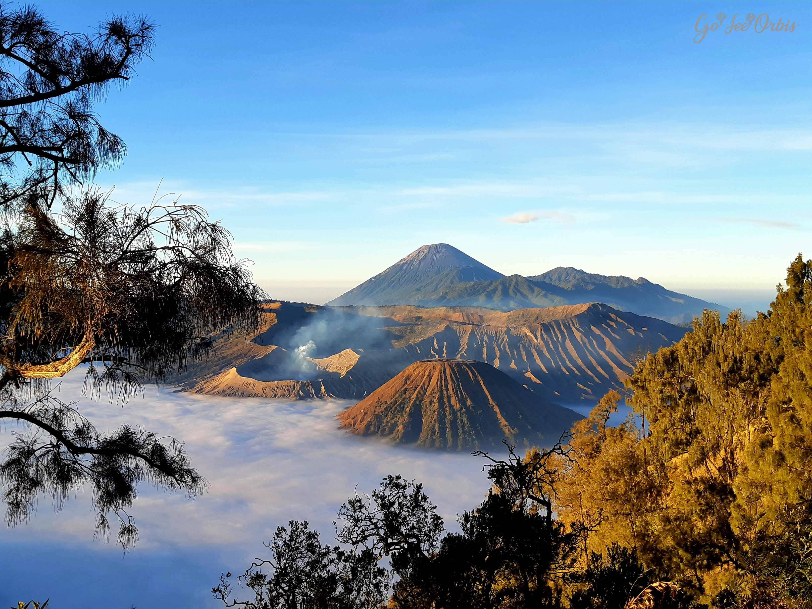
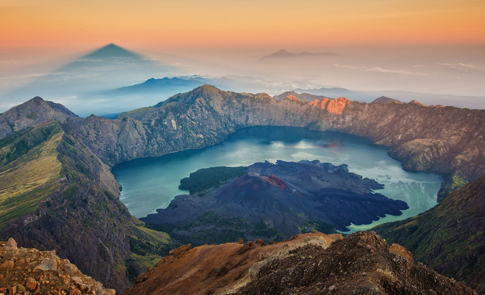
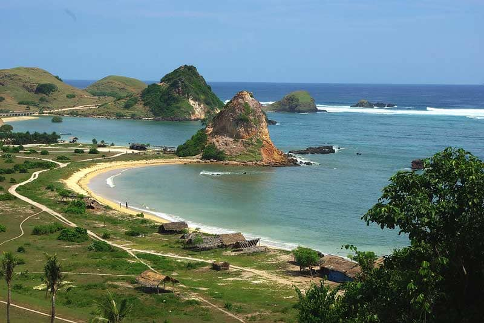
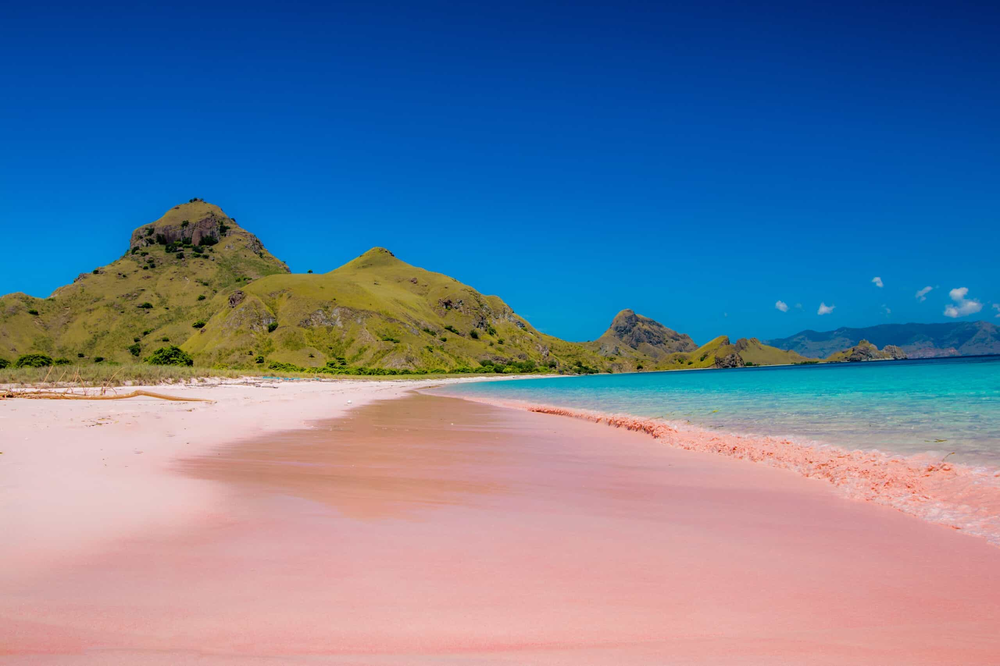
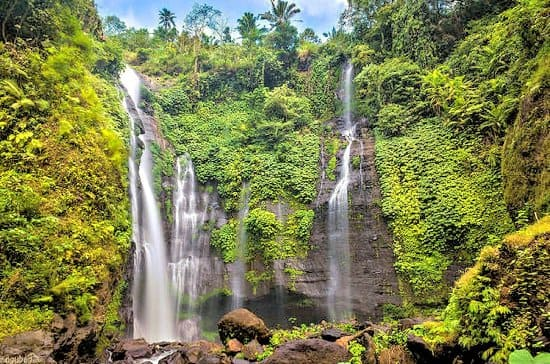
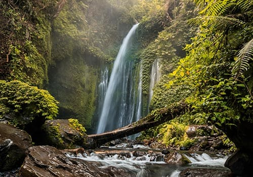

Overview
Indonesia, a vast and diverse archipelago in Southeast Asia, encompasses over 17,000 islands, with Java, Sumatra, Kalimantan, Sulawesi, and Papua being the main ones. Boasting a population of over 270 million, it stands as the world's fourth most populous country, celebrated for its rich cultural tapestry, comprising over 300 ethnic groups. Jakarta, situated on Java, serves as the bustling capital. The country's economy thrives on agriculture, manufacturing, and tourism, with Indonesia being a global leader in palm oil and rubber production. Its history, marked by independence from Dutch rule in 1945, has shaped a politically stable environment with a presidential republic. Indonesia's biodiversity, with its status in the Coral Triangle, attracts tourists to its natural wonders like Bali's beaches and iconic landmarks such as Borobudur. Despite environmental challenges and occasional natural disasters, Indonesia's unique blend of traditions, landscapes, and wildlife makes it a captivating and globally significant nation.
Quick Facts
💬 Language: Indonesian
💴 Currency:Indonesian Rupiah (IDR)
🕌 Religion: Islam
🏢 Capital: Jakarta
🌍 Climate: Tropical; hot & humid year-round.
Budget
Estimating a budget for a trip to Indonesia depends on various factors such as the duration of stay, travel preferences, and chosen accommodations. On average, a mid-range budget for a comfortable experience could range from $50 to $100 per day. This would cover accommodation in guesthouses or mid-range hotels, local transportation, meals at local eateries, and some leisure activities. For those seeking a more luxurious experience with upscale accommodations and fine dining, the daily budget could exceed $150. Travelers should also consider additional costs for domestic flights, entrance fees to attractions, and potential expenses for excursions to places like Komodo Island or other remote destinations. Bargaining is common in markets, and it's advisable to have some cash on hand, as credit cards may not be widely accepted in more remote areas. Overall, Indonesia offers a range of options to suit various budgets, allowing travelers to customize their expenses based on personal preferences and priorities.
Interesting Places in Indonesia
Volcanoes
- 
- Mount Bromo is one of the 5 volcanoes within the Tengger Caldera in Bromo Tengger Semeru National Park surrounded by a vast area of fine volcanic sand called Laut Pasir (Sea of Sand).
Mount Bromo in Java
- 
- The mighty Rinjani mountain of Gunung Rinjani is a massive volcano which towers over the island of Lombok. A climb to the top is one of the most exhilarating experiences you can have in Indonesia. At 3,726 meters tall, Gunung Rinjani is the second highest mountain in Indonesia.
Mount Rinjani in Lombok
Beaches
- 
- Kuta Beach is a 2.5-km stretch of cream-coloured sand, bordering Legian to the north and Tuban (home of the Ngurah Rai International Airport) to the south.
Kuta Beach in Bali
- 
- Komodo Island National Park is renowned for its vibrant, pink-sand beaches, including Pantai Merah on Komodo Island itself. The waters surrounding Komodo Island are turquoise-blue and filled with vividly coloured tropical fish, making it an incredible destination for snorkelling and scuba diving.
Pink Beach in Komodo Island
Waterfalls
- 
- Sekumpul Waterfall also known locally as Air Terjun Sekumpul, is arguably Bali’s most spectacular cascades with a collection of 7 tall, misty waterfalls in one area.
Sekumpul Waterfall in Bali
- 
- Tiu Kelep Waterfall is incredible waterfall in the north of Lombok. The waterfall is located in the town of Senaru, which is the area most people stay in before trekking to Mount Rinjani.